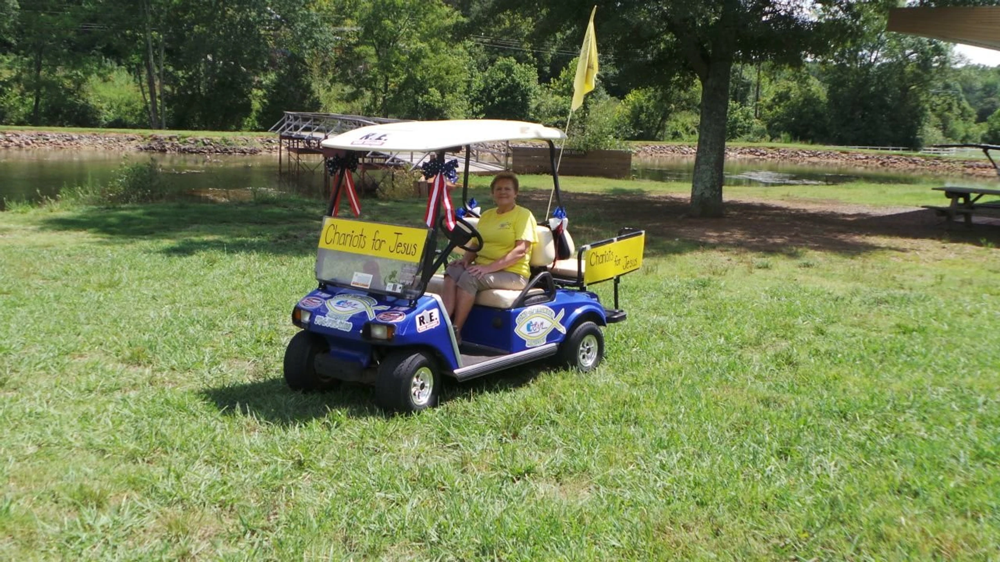
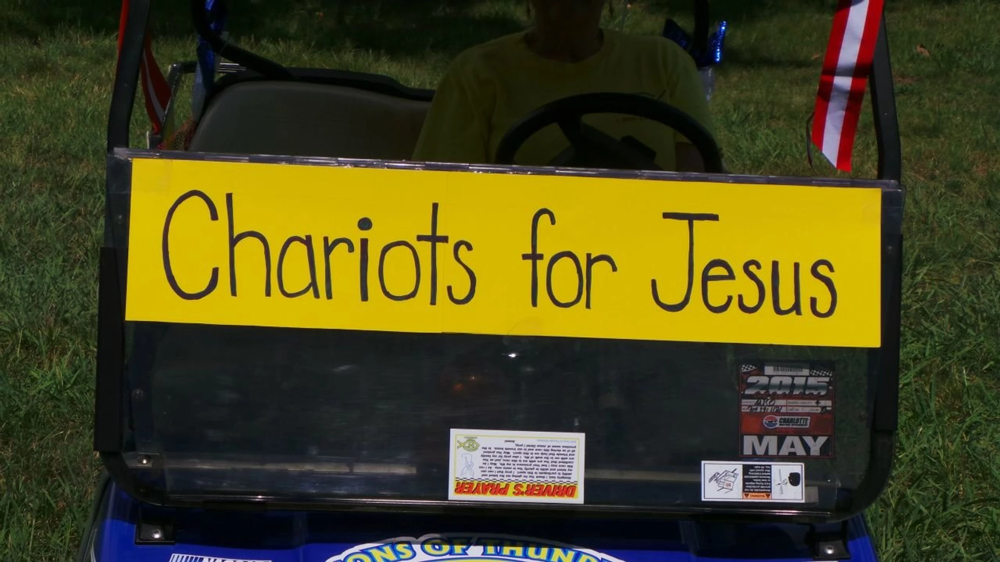
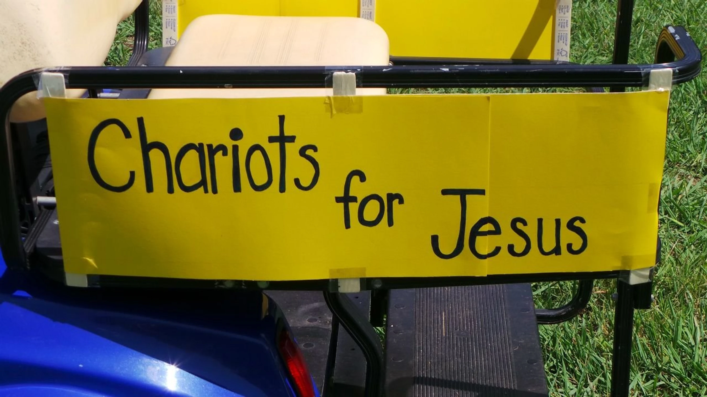
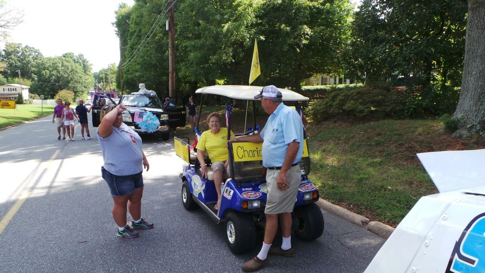

Expanding our mission and impact — bringing the gospel to the racing community and beyond.

Charlotte Motor Speedway requested that we discontinue transporting individuals with disabilities at the track. After years of faithful service, the speedway indicated they had contracted with “a new ministry that can handle our ministry,” making Sons of Thunder’s services no longer necessary at that venue.
Currently, Chariots for Jesus operates across multiple community locations. We recently approached the Balloon Rally seeking future partnership opportunities to continue expanding our reach and serving those in need.
The ministry continues its work at Mountain Creek Speedway, Charlotte Expo, CPLMS/CCMS, and potentially Millbridge Speedway. The Summer Shootout was awesome — we praise God for the doors He continues to open in the racing community.
Our missions initiative in Bimini proved successful, with plans to return. We ask for your continued community support as we address emerging needs and look for new ways to share the love of Christ.


